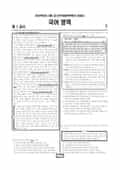

문제지

전국연합학력평가 · 시·도교육청 주관
2023년 4월 고3 학력평가 국어 화법과작문 1등급컷은 원점수 98점(역산값), 표준점수 최고점은 137점입니다.
원점수 1등급컷은 공식 발표값이 아니라 EBSi·입시기관 값입니다. 등급별 값은 등급컷 표, 출처 구분은 데이터 원칙에 있습니다.

시험지를 먼저 풀어 보세요. 등급컷·표준점수·난이도는 흐리게 가려 뒀어요.
| 등급 | 원점수 | 표준점수 | 백분위 |
|---|---|---|---|
| 1 | 98 | 130 | 97 |
| 2 | 91 | 124 | 89 |
| 3 | 83 | 117 | 77 |
| 4 | 72 | 108 | 59 |
| 5 | 60 | 97 | 40 |
| 6 | 43 | 83 | 23 |
| 7 | 30 | 71 | 11 |
| 8 | 21 | 64 | 4 |
등급별 컷 · 입시기관 역산값 · 만점 100점
| 등급 | 표준점수 이상 | 인원(명) | 비율 |
|---|---|---|---|
| 1 | 130 | 11,536 | 4.07% |
| 2 | 124 | 20,496 | 7.23% |
| 3 | 117 | 35,855 | 12.65% |
| 4 | 108 | 51,007 | 18% |
| 5 | 97 | 53,365 | 18.83% |
| 6 | 83 | 46,855 | 16.53% |
| 7 | 71 | 34,001 | 12% |
| 8 | 64 | 20,133 | 7.1% |
| 9 | 46 | 10,123 | 3.57% |
국어 영역 전체 응시자 기준이에요.
출처: 시·도교육청이 공개한 전국연합학력평가 성적 분석·통계자료(공개 자료 보기).
발행 기관: 시·도교육청(전국연합학력평가). 파일 위치: 이 사이트가 보관한 사본. 저작권은 발행 기관에 있습니다. 원본과 다르거나 게시 중단이 필요하면 연락처로 알려 주세요. 등급컷 출처 구분은 데이터 원칙에서 설명합니다.
막대 색은 역대 대비 난이도 · 진한 막대가 이 시험 · 막대를 누르면 그 회차로 이동
| 회차 | 1등급컷 | 표점 최고 | 1등급 표점 | 난이도 |
|---|---|---|---|---|
| 4월 학평2023년 고3이 시험 | 98 | 137 | 130 | 매우 쉬움 |
| 3월 학평2023년 고3 | 89 | 146 | 133 | 보통 |
| 10월 학평2022년 고3 | 90 | 141 | 129 | 보통 |
| 7월 학평2022년 고3 | 94 | 134 | 129 | 보통 |
| 4월 학평2022년 고3 | 97 | 135 | 130 | 쉬움 |
| 3월 학평2022년 고3 | 92 | 144 | 132 | 어려움 |
| 10월 학평2021년 고3 | 94 | 138 | 130 | 보통 |
| 7월 학평2021년 고3 | 87 | 148 | 132 | 매우 어려움 |
| 4월 학평2021년 고3 | 97 | 139 | 130 | 매우 쉬움 |
| 3월 학평2021년 고3 | 76 | 142 | 131 | 매우 어려움 |
공통과목 독서는 율곡 이이가 제시한 독서 병통의 유형과 해결 방안을 다룬 독서론(1~3번), (가) 특허 출원 명세서와 특허 요건, (나) 특허권 침해의 유형을 묶은 주제 통합형 법 지문(4~9번), 이름과 실재의 관계를 다룬 공손룡과 후기 묵가의 명실 논쟁(10~13번), 전기화학식 가스 센서의 구조와 원리를 다룬 기술 지문(14~17번)으로 구성되었습니다.
독서에서는 오답률 50%를 넘은 문항이 없었습니다. 연필 특허를 예로 든 <보기>에 반응하는 7번(3점, 46.7%), 특허권 간접 침해 사례를 다룬 8번(43.9%), '옷이 없다'는 대화를 명실 논쟁으로 이해하는 12번(40.3%)이 독서에서 많이 틀린 문항이었습니다.
문학은 이호민 「서호가」와 남극엽 「애경당십이월가」를 묶은 고전 시가(18~21번), 이육사 「노정기」·최승호 「발효」와 김진규의 고전 수필 「몰인설」을 묶은 갈래 복합(22~26번), 작자 미상의 고전소설 「현수문전」(27~30번), 1960년대 근대화 속 농민의 애환을 다룬 김정한의 소설 「평지」(31~34번)로 구성되었습니다.
이 회차 국어에서 가장 많이 틀린 18번(2점, 66.4%)은 「서호가」와 「애경당십이월가」의 공통점을 고르는 표현상 특징 문항으로, 응답의 29.6%가 한 오답에 몰렸습니다.
화법과 작문은 인도공작 꼬리의 구조색을 다룬 발표(35~37번), 공중전화 폐지 여부를 두고 나눈 학생들의 대화와 이를 바탕으로 쓴 초고(38~42번), 도시 낙엽 문제와 해결 방안을 다룬 지역 신문 독자 기고문(43~45번)으로 구성되었습니다.
선택과목에서 오답률 50%를 넘은 문항은 없었고, 낙엽 기고문에서 나온 45번(2점, 35.0%)이 가장 많이 틀린 선택 문항이었습니다.
가장 많이 틀린 문항이 2점짜리 표현상 특징 문항이었던 회차입니다. 고전 시가의 표현 문항은 문답, 연쇄, 명령형, 직유, 음성 상징어처럼 선택지에 나온 표현 방식을 작품의 구절과 하나씩 대응해 보는 습관이 필요합니다. 시험 전체 흐름은 이 회차의 회차 해설에 정리했습니다.